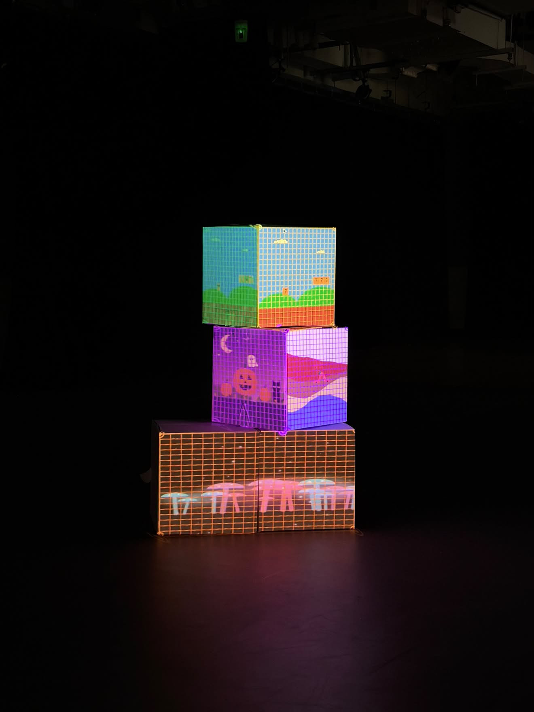
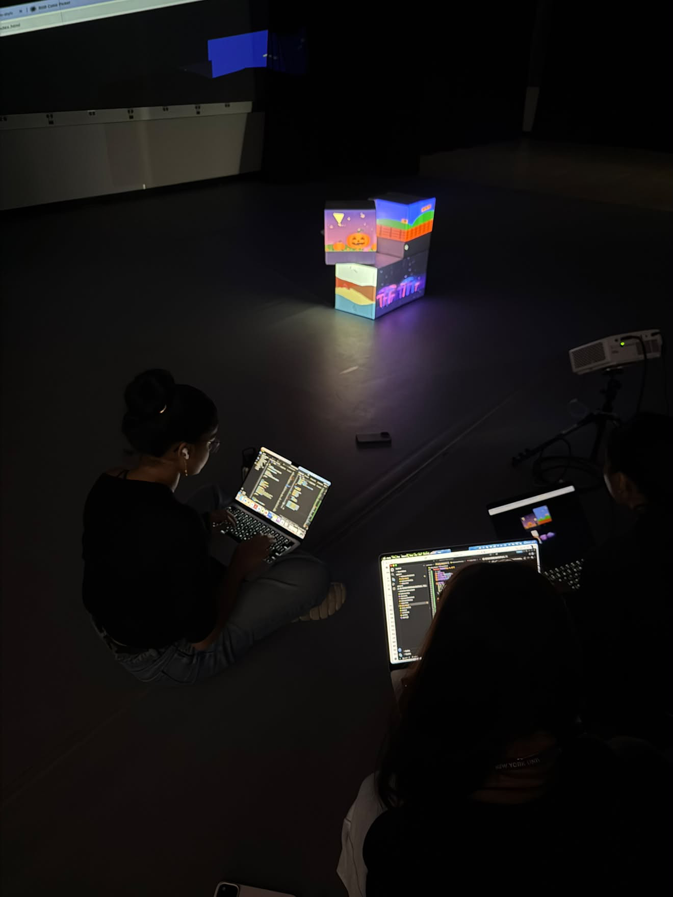
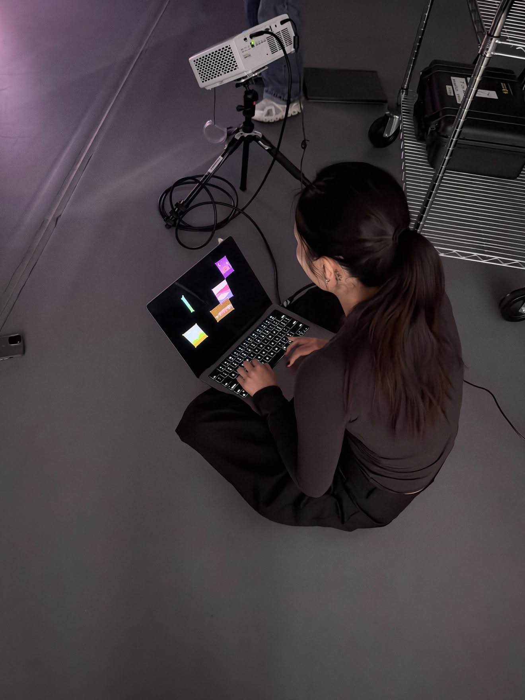

For this project, we decided we wanted to each build our different worlds, with the connecting piece being one character that is able to move between them. For my part of the assignment, as soon as we talked about a character moving between worlds I thought of old video games with obstacles, most specifically the original Super Mario Bros world. I wanted to recreate a fun and kind of nostalgic feel and atmosphere, so I used shapes and text to try to build this + a png pixelated cloud to give it that “retro” feeling.
It looked a lot more intimidating at first, as I only had my reference picture as a starting point to what I wanted it to look like, and things became less intimidating when I realized it probably won't and doesn't need to look the exact same, nor have the exact same visual components, but rather use it as inspiration for a simpler sketch that's also fun to play with.
process


